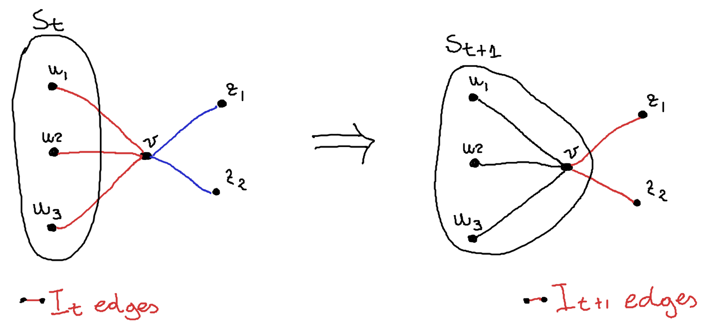
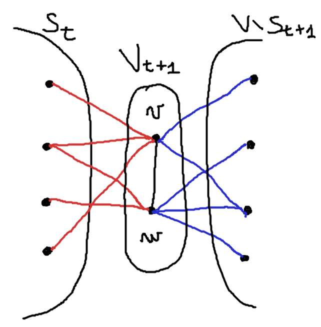
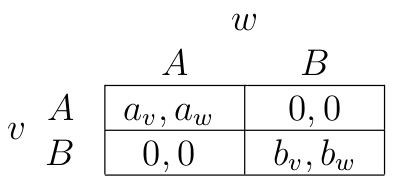
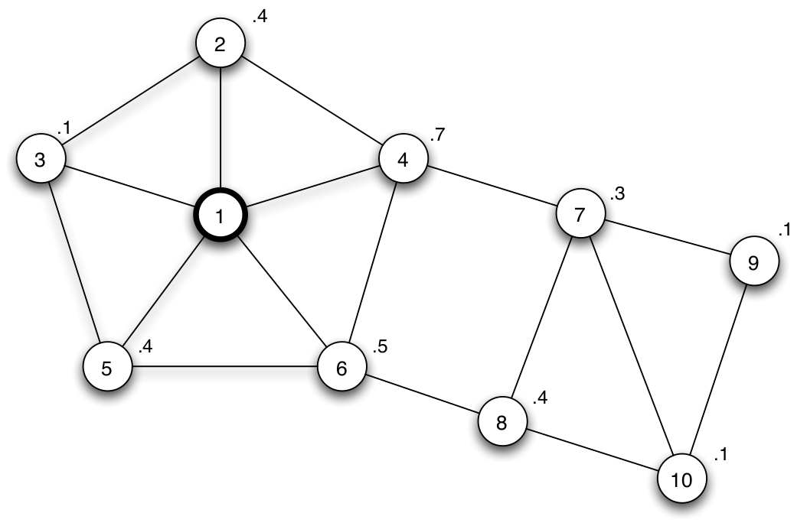
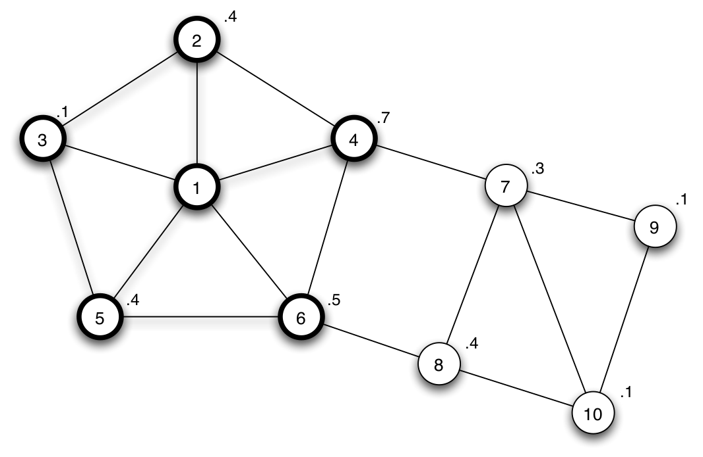
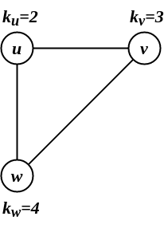
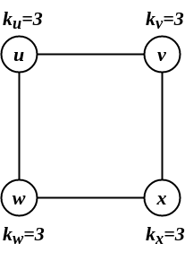
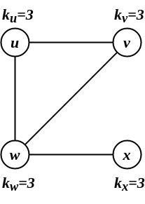

AR - Lesson 10
Indice
1 ← The Cascade Capacity on Infinite Network with bounded Degree
Questa lezione è il continuo della precedente ←
Dagli esempi precedenti è facile notare che la soglia di adozione massima nella griglia infinita è minore di quella della catena infinita, per via di una struttura più ricca è densa.
Comunque, in entrambi i casi, non si può mai avere una soglia di adozione maggiore di \(\frac{1}{2}\).
Quindi viene da pensare che, almeno in questi due modelli, l'innovazione A deve essere appettibile almeno quanto lo stato dominante B.
In effetti questo è un ragionamento abbastanza ragionevole anche applicato in un contesto reale.
Sorge però la domanda:
Esiste una conformazione di una rete infinita in cui si può ottenere una capacita di cascata maggiore di \(\frac{1}{2}\)? Ovvero, è possibile fare in modo che si adotti
A, nonostanteBsia più conveniente?
Per fortuna la risposta è no, e questo verrà dimostrato nel seguente teorema
THM Per ogni grafo infinito \(G=(\mathbb{N},E)\) i cui nodi hanno grado finito, la capacità di cascata di \(G\) è al più \(q_G \leq \frac{1}{2}\).
Proof Supponiamo per assurdo che esista un insieme finito di iniziatori \(V_0\), che nonostante ci sia una soglia di adozione \(q > \frac{1}{2}\), genera comunque una cascata completa dell'innovazione
A. Definiamo con \(V_t\) l'insieme di nodi che adottanoAal tempo \(t \geq 0\), con l'insieme \[ S_t \equiv \bigcup_{i = 0}^{t} V_t \] l'insieme di tutti i nodi che al tempo \(t\) si trovano nello statoA.
Definiamo con \(I_t\) l'insieme di archi del taglio \((S_t, V \setminus S_t)\), ovvero \[ I_t \equiv \lbrace (u,v) : u \in S_t \land v \in V \setminus S_t \rbrace \]
Dato che \(V_0\) genera una cascata completa di
Acon soglia di adozione \(q > 0.5\), si può dimostrare che per ogni \(t \geq 0\), allora è vero che \[ \vert I_t \vert > \vert I_{t+1} \vert\\ \mbox{oppure}\\ I_t \equiv I_{t+1} \] Dato che il grado massimo di \(G\) è limitato, allora \(\vert I_0 \vert\) sarà una quantità finita \(k > 0\). Inoltre, è facile convincersi che il processo termina quando abbiamo che \(I_t \equiv I_{t+1}\). Però visto che \(V_0\) genera un processo infinito di cascata diA, allora per ogni \(t \geq 0\), non deve mai accadere che \(I_t \equiv I_{t+1}\), ovvero accade sempre che \(\vert I_t \vert > \vert I_{t+1} \vert\). Ma ciò è assurdo, perché per via della dimensione finita di \(I_0\), può accadere al più \(k\) volte consecutive che il processo procedi. Perciò deve esistere necessariamente un tempo \(\tau \geq k\), tale che \(I_\tau \equiv I_{\tau + 1}\) (assurdo).
Procediamo quindi con la dimostrazione dei due eventi. Per farlo, basta dimostrare la mutua esclusione degli eventi, ovvero che se \(I_t \not\equiv I_{t+1}\) allora necessariamente \(\vert I_t \vert > \vert I_{t+1} \vert\) (e implicando quindi che non può nemmeno mai accadere che \(\vert I_t \vert < \vert I_{t+1} \vert\)).
Se per ipotesi abbiamo che \(I_t \not\equiv I_{t+1}\), ciò implica che esiste almeno un nodo \(v\) che ha adottato
Aal tempo \(t + 1\), e che quindi \(V_{t+1} \neq \emptyset\). Affinché ciò sia vero, è necessario che \(v\) abbia almeno un vicino \(u \in N(v)\) che è anche nello statoA, ovvero \(u \in N(v) \cap S_t\).
Più in generale, per ogni nodo \(v \in V_{t+1}\) esiste alemno un arco del tipo \((u,v) \in I_t\), inoltre tale arco non apparterrà a \(I_{t+1}\). Viceversa, tutti gli archi che apparterranno a \(I_{t+1}\) certamente non erano in \(I_t\).

Figura 1: \(v \in V_{t+1}\): \(v\) adotta
Aal tempo \(t + 1\).Perciò in base a quanto osservato (e anche osservando la figura) avremo che \[ I_{t+1} \equiv \left( I_t \; \setminus \; \left[ \bigcup_{v \in V_{t+1}} \lbrace (u,v) \in E : u \in S_t \rbrace \right] \right) \cup \left[ \bigcup_{v \in V_{t+1}} \lbrace (v,z) \in E : z \in V \setminus S_{t+1} \rbrace \right] \]
È anche facile verificare che \[ \forall v,w \in V_{t+1}\\ \lbrace (u,v) \in E : u \in S_t \rbrace \cap \lbrace (u,w) \in E : u \in S_t \rbrace = \emptyset\\ \land\\ \lbrace (v,z) \in E : z \in V \setminus S_{t+1} \rbrace \cap \lbrace (w,z) \in E : z \in V \setminus S_{t+1} \rbrace = \emptyset \] Per comprendere meglio la precedente conclusione, osservare la seguente immagine

Figura 2: Esempio.
Tutto ciò implica che
\begin{align*} \vert I_{t+1} \vert = \vert I_t \vert &- \sum_{v \in V_{t+1}} \vert \lbrace (u,v) \in E : u \in S_t \rbrace \vert\\ &+ \sum_{v \in V_{t+1}} \vert \lbrace (v,z) \in E : z \in V \setminus S_{t+1} \rbrace \vert \end{align*}Per semplificare la precedente formula, possiamo definire i seguenti insiemi come:
- \(\lbrace (u,v) \in E : u \in S_t \rbrace = N(v) \cap S_t\)
- \(\lbrace (v,z) \in E : z \in V \setminus S_{t+1} \rbrace = N(u) \setminus S_{t+1}\)
perciò la formula per \(\vert I_{t+1} \vert\) risulterà essere:
\begin{align*} \vert I_{t+1} \vert &= \vert I_t \vert - \sum_{v \in V_{t+1}} \vert N(v) \cap S_t \vert + \sum_{v \in V_{t+1}} \vert N(u) \setminus S_{t+1} \vert\\ &= \vert I_t \vert - \sum_{v \in V_{t+1}} \left ( \vert N(v) \cap S_t \vert - \vert N(u) \setminus S_{t+1} \vert \right) \end{align*}Osserviamo adesso che, dato che un \(v \in V_{t+1}\) ha adottato il nuovo stato
\begin{align*} \vert I_{t+1} \vert &= \vert I_t \vert - \sum_{v \in V_{t+1}} \left ( \vert N(v) \cap S_t \vert - \vert N(u) \setminus S_{t+1} \vert \right)\\ &\leq \vert I_t \vert - \sum_{v \in V_{t+1}} \left ( \vert N(v) \cap S_t \vert - \vert N(u) \setminus S_t \vert \right)\\ &= \vert I_t \vert - \sum_{v \in V_{t+1}} 1 = \vert I_t \vert - \vert V_{t+1} \vert < \vert I_t \vert \end{align*}A, e dato che la soglia di adozione è \(q > \frac{1}{2}\), allora più della metà dei suoi vicini era in \(S_t\), ovvero \[ \frac{\vert N(v) \cap S_t \vert}{\vert N(v) \vert} \geq q > \frac{1}{2} \] oppure, visto in altri termini \[ \vert N(v) \cap S_t \vert > \vert N(v) \setminus S_t \vert \geq \vert N(v) \setminus S_{t+1} \vert \] Perciò avremo chedove l'ultima disuguaglianza viene dall'assunzione che \(V_{t+1} \neq \emptyset\) \(\square\).
2 Modello eterogeneo
Il modello studiato in precedenza era un modello uniforme (o omogeneo), nel quale si assume che tutti i nodi abbiano lo stesso vantaggio nell'usare la tecnologia A o B.
Sarebbe più reale invece considerare un modello eterogeneo, in cui ogni individuo ricava un proprio profitto personale dall'adottare una nuova tecnologia.
In questo caso possiamo modellare i vantaggi tra le coppie di invidui con un A-B heterogeneous coordination game

Figura 3: A-B heterogeneous coordination game table.
Perciò, se un nodo \(v\) ha una frazione \(p\) di vicini nello stato A e una frazione \((1-p)\) nello stato B, il guadagno scegliendo A sarà \(pa_v\) e quello rimanendo in B sarà \((1-p)b_v\).
Perciò possiamo affermare che A è una scelta migliore se
\[
p \geq \frac{b_v}{a_v + b_v}
\]
Definiamo con \(q_v = \frac{b_v}{a_v + b_v}\) la personale soglia di adozione dell'individuo \(v\).
Consideriamo il seguente esempio, con insieme di nodi iniziatori \(V_0 = \lbrace 1 \rbrace\).

Figura 4: Esempio giocattolo, con \(V_0 = \lbrace 1 \rbrace\).
Osservare che il nodo 1 è una elemento abbastanza centrale nella comunità \(\lbrace 1,2,3,4,5,6 \rbrace\).
Purtroppo, nonostante la sua posizione strategica, è dificcile che riesca a convincere i suoi vicini ad adottare A.
Per fortuna c'è il vicino 3 che è facilmente influenzabile, il quale ha una soglia di adozione \(q_3 = 0.1\) parecchio più bassa degli altri.
Perciò, se 1 riesce a convincere il nodo 3 ad adottare A, allora si scatenerebbe una cascata su tutta la comunità \(\lbrace 1,2,3,4,5,6 \rbrace\).

Ciò ci suggerisce che scegliere un iniziatore in un posto strategico non è più una condizione sufficiente a garantire la diffusione di A, quantomeno all'interno di una comunità.
Invece, è necessario che gli iniziatori abbiano anche la possibilità di avere accesso a individui facilmente influenzabili.
Ricordiamo che nel modello omogeneo ciò che impediva una cascata completa era la presenza di cluster di densita \(1 - q\), ovvero un sottoinsieme di nodi \(V'\) tale che
\[
\frac{\vert N(u) \cap V' \vert}{\vert N(u) \vert} \geq 1 - q \;\; \forall u \in V'
\]
Analogamente per il modello eterogeneo, definiamo i blocking cluster quei sottoinsiemi di nodi \(V'\) tali che
\[
\frac{\vert N(u) \cap V' \vert}{\vert N(u) \vert} \geq 1 - q_u \;\; \forall u \in V'
\]
Anche per il modello eterogeno, la presenza di tali strutture è un ostacolo alle cascate complete!
Tale osservazione è formalmente espressa dal seguente teorema
THM Sia il grafo \(G=(V,E)\) e l'insieme di iniziatori \(V_0 \subseteq V\). L'insieme \(V_0\) non genera una cascata completa di
Ase e solo so \(G-V_0\) congiene un blocking cluster.
3 Azioni collettive
I processi di diffusione sono utili anche per modellare situazioni in cui bisogna prendere decisione collettive.
Consideriamo come esempio una situazione in cui è presente un regime totalitario su una popolazione.
Il popolo ha organizzato una grande manifestazione/rivolta.
Ovviamente solo se un numero considerevole di individui aderirà si riusciranno ad ottenere dei reali benefici.
Viceversa, se non partecipa molta gente, tutti coloro che avranno aderito verranno arrestati.
Secondo questo scenario è ragionevole pensare che ogni individuo vada se sa che un certo numero di altri individui partecipi.
(Il gioco deve valerne la candela).
Assumiamo inoltre che tale regime ostacola le comunicazioni, cosiché un individuo può sapere solo cosa faranno i suoi diretti conoscenti (e non l'intera popolazione).
Tale esempio è facilmente modellabile col modello di adozione di una nuova innovazione visto in precedenza.
Per ogni individuo \(v\), definiamo con \(k_v\) la sua soglia di confidenza, ovvero il numero minimo di persone che devono partecipare alla protesta affinché il nodo \(v\) si convinca a partecipare.
Più precisamente, \(v\) partecila alla protesta se sa che altre \(k_v - 1\) persone partecipano1.
Dato che però \(v\) non può sapere l'afflusso globale (per via delle comunicazioni ristrette), possiamo dire che \(v\) parteciperà alla protesta solamente se se sa che altri \(k_v - 1\) suoi vicini partecipano.
Purtroppo però, per via della natura rischiosa dell'informazione, \(v\) non può sapere se i suoi parteciperanno o meno, ma solamente la loro soglia di confidenza.
Ricapitolando, ogni individuo \(v\) conosce solamente le soglie di confidenza \(k_u\) dei suoi vicini \(u \in N(v)\) e la rete di conoscenza della comunità.
Consideriamo il seguente esempio

Certamente \(w\) non parteciperà perché non ha abbastanza vicini per rientrare nella sua soglia di confidenza.
Il nodo \(v\) per partecipare richiede che entrambi i suoi vicini, \(u\) e \(w\), aderiscano.
Però, dato che non può dire nulla sulla partecipazione di \(w\), può solamente assumere che lui non partecipi per via della sua soglia di confidenza \(k_w\) troppo alta.
Infine \(u\) per partecipare richiede che solo un suo vicino partecipi.
Però, dato che per lo stesso ragionamento può dedurre che \(w\) non aderisce, rimane col dubbio rispetto all'adesione di \(v\).
Perciò ad \(u\) conviene realmente parteciapre e rischiare di essere l'unico a farlo?
In realtà non gli conviene, in quanto può intuire che anche \(v\) abbia fatto lo stesso ragionamento in merito a \(w\), e che quindi molto probabilmente \(v\) non parteciperà.

Il secondo esempio è più simmetrico, perciò consideriamo solamente la prospettiva del nodo \(u\).
Lui sa che entrambi i suoi vicini \(v\) e \(w\) hanno soglia di confidenza 3, perciò tutti e tre \(u,v,w\) potrebbero tranquillamente aderire alla protesta.
Però \(u\) sa anche che \(v\) non ha informazioni riguardo la confidenza di \(w\), e viceversa \(w\) non ne ha riguardo \(v\), perciò non può dare per scontato che entrambi partecipino.
Infatti \(u\) non ha idea di quale sia la soglia di confidenza di \(x\).
Nel caso \(k_x\) fosse molto alta, allora potrebbe intuire che sia \(v\) che \(w\) non siano confidenti nel partecipare.
Applicando questo ragionamento in maniera simmetrica su tutti i noi, possiamo dedurre che nessuno parteciperà alla protesta.

Consideriamo in fine quest'ultimo esempio meno simmetrico del precedente.
Tutti i nodi hanno bisogno di sapere che almeno altri due parteciperanno alla manifestazione per essere confidenti e aderire a loro volta.
Partendo dal punto di vista del nodo \(u\), esso sa benissimo che la soglia di adozione del triangolo formato con \(w\) e \(v\) è 3.
Sa anche molto bene che sia \(w\) che \(v\) sanno le stesse cose che sa \(u\).
Ovvero tutti e tre i nodi del triangolo sanno tutto riguardo loro stessi (tranne la decisione di partecipare ovviamente).
Dato che siamo in una situazione del tipo "io so che tu sai che io so" tra \(u,v,w\), tutti e tre i nodi possono ben pensare di partecipare tranquillamente alla protesta.
Notare che \(w\) riesce a prendere la decisione di parteciapre senza nemmeno considerare il nodo \(x\), il quale certamente non parteciperà perché ha una soglia di confidenza troppo alta rispetto al suo numero di vicini.
In maniera intuitiva possiamo dire che in assenza di informazioni è molto difficile riuscire a prendere una decisione collettiva, persino quando la maggior parte degli individui è d'accordo su un pensiero comune. Infatti per questo comune le dittature spingono molto sul controllo delle informazioni e tendono a chiudere al mondo esterno le conoscenze. Questo fenomeno è conosciuto come ignoranza pluralistica. A conferma di quanto detto, nell'ultimo esempio si riesce a prendere una decisione collettiva proprio perché i nodi \(u,v,w\) disponevano di una stessa base d'informazioni comune.
Note a piè di pagina:
\(v\) è il \(k_v\)-esimo partecipante.